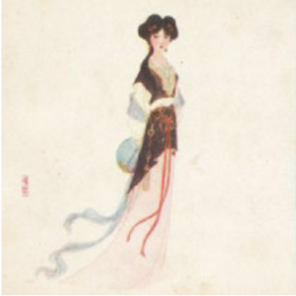
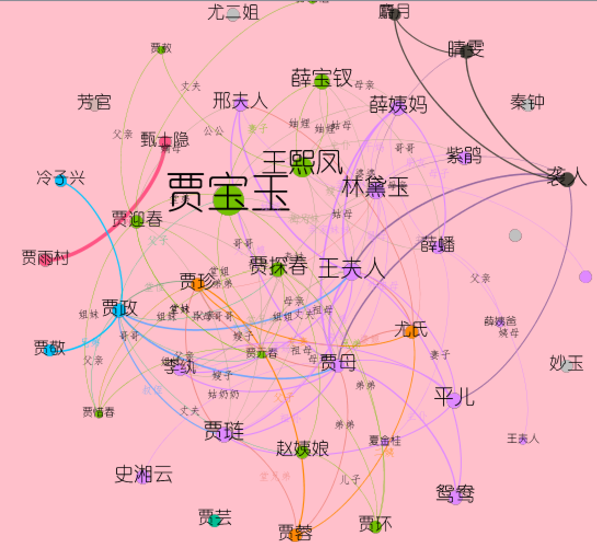

人物关系全貌
人物个人信息
人物百科查询
贾家
王家
史家
薛家
其他
贾母
<
贾宝玉
<
贾政
<
贾元春
<
贾惜春
<
贾探春
<
贾迎春
<
贾琏
<
王熙凤
<
王熙凤
<
王夫人
<
薛姨妈
<
李纨
<
史湘云
<
袭人（非史家）
<
赵姨娘（非史家）
<
邢夫人（非史家）
<
鸳鸯（非史家）
<
薛姨妈
<
薛宝钗
<
薛蟠
<
妙玉
<
尤二姐
<
尤氏
<
平儿
<

晴雯
<
林黛玉
<
秦钟
<
紫鹃
<
甄士隐
<
<!--  -->